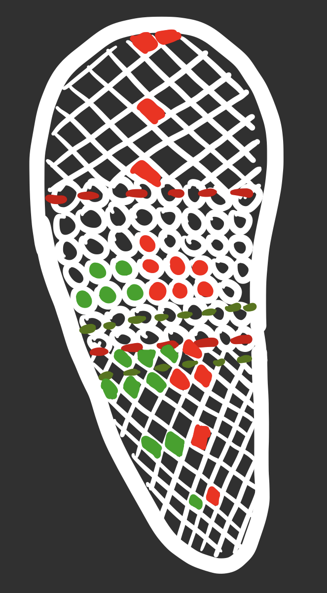

library(tidyverse)
library(here)
library(flextable)
library(janitor)
library(readxl)
library(readr)
library(dplyr)Homework-3
Link to GitHub Repository: https://github.com/eliana427/ENVS-193DS_homework-03.git
Set up
Problem 1. Personal data
a. Data summarizing
I am comparing counts between groups, the “yes” on the phone group and the “no” on the phone group because I am comparing the number of minutes it takes me to walk to the IV tunnel from my house depending on if I am talking on the phone or not, which is informative because theoretically I think I walk slower when I am on the phone because I am less focused on walking. I will take the median of each group, which will allow the data to not be impacted by outliers, and also the minimum, maximum, first quartile, and third tile of each group’s walk times (minutes) and compare them.
b. Visualization
clean_data <- my_data %>% # store data as object to be cleaned, will be using clean data set
clean_names() # clean the names in the data, spaces to underscores and all lowercase
View(clean_data) # view the new version of my dataggplot(data = clean_data, # use data frame clean_data
aes(x = on_the_phone, # x-axis will be data from on_the_phone column
y = time_it_takes_me_to_walk_to_tunnel_min, # y-axis will be data from time_it_takes_me_to_walk_to_tunnel_min column
color = on_the_phone)) + # color based on yes or no in on_the_phone column
geom_boxplot() + # create a boxplot
geom_jitter(position = position_jitter(width = 0.2, # jitter the points with a horizontal distance of 0.2
height = 0)) + # no vertical jitter
labs(x = "On the phone (yes/no)", # name x-axis
y = "Time to walk to IV tunnel (minutes)", # name y-axis
color = "On the phone") + # name leegend
scale_color_manual(values = c("firebrick4", "forestgreen")) # change colors of jittered points/box plots
data_summary <- clean_data |> # use clean_data frame to create the object to summarize data
group_by(on_the_phone) |> # group by yes or no on the phone
summarize(
minimum = min(time_it_takes_me_to_walk_to_tunnel_min, na.rm = TRUE), # find the minimum
q1 = quantile(time_it_takes_me_to_walk_to_tunnel_min, 0.25, na.rm = TRUE), # find the first quantile (25%)
median = median(time_it_takes_me_to_walk_to_tunnel_min, na.rm = TRUE), # find the median
q3 = quantile(time_it_takes_me_to_walk_to_tunnel_min, 0.75, na.rm = TRUE), # find teh third quantile (75%)
maximum = max(time_it_takes_me_to_walk_to_tunnel_min, na.rm = TRUE) # find the maximum
)
data_summary # display the data summary# A tibble: 2 × 6
on_the_phone minimum q1 median q3 maximum
<chr> <dbl> <dbl> <dbl> <dbl> <dbl>
1 No 15 17.8 18.5 20.2 23
2 Yes 18 19 20 21 23c. Caption
Figure 1. Talking on the phone tends to make me take longer to walk to the IV tunnel from my house. Data from ‘my_data’ package (Shandalov EB, 2025). Points represent observations of the time (minutes) it took me to walk to the IV tunnel and plotted based on whether I was on the phone or not (total n = 30). Colors represent if I was on the phone and if I was not on the phone (red: no, green: yes).
d. Table presentation
data_summary_rounded <- data_summary |> # creating new object for rounded data
mutate(across(c(minimum, q1, median, q3, maximum), round, digits = 1)) # rounding numbers in table to one decimal place
ft <- flextable(head(data_summary_rounded), # create flextable from the rounded data
col_keys = c("on_the_phone", "minimum", "q1", "median", "3", "maximum")) |> # make the column categories this variables
set_header_labels(median = "Median", on_the_phone = "On the phone", q1 = "First quartile", q3 = "Third quartile", minimum = "Minimum", maximum = "Maximum") |> # change the names of the columns in the flextable
autofit() # fit the flextable to the page
ft <- set_caption(ft, caption = "Table 1: Walking Data Summary") # add a table to the flextable
ft # display the flextableOn the phone | Minimum | First quartile | Median | Maximum | |
|---|---|---|---|---|---|
No | 15 | 17.8 | 18.5 | 23 | |
Yes | 18 | 19.0 | 20.0 | 23 |
Problem 2. Affective visualization
a. Describe in words what an affective visualization could look like
for your personal dataI would choose a physical representation, such as a shoe, where I would mark my data points in different colors depending if I was on the phone or not. To match my box plot, I would choose red for when I’m not on the phone and green for when I am on the phone. An example of this could be a vans shoe, which has individual dots and diamonds on the bottom; I could place values that repeat next to each other, and I could include points proportionally to spread across the shoe because I have a range of 15-23 minutes. Including the confidence intervals would be helpful too because it provides more information and guides me in where I place the red and green colors.
b. Sketch
I spoke to An at office hours and she told me I didn’t have to do a sketch because I already had my draft on the iPad; for the final affective visualization, I will be drawing on a physical shoe.
c. Draft

d. Artist statement
In my piece, the shoe colored in at various points, I represented the minutes it took me to walk from home to the IV tunnel on the same route depending on if I am on the phone (green) or not on the phone (red), which I created by drawing on the bottom of a shoe. I was inspired by the creativity in Stefanie Posavec and Giorgia Lupi’s Dear Data project, so I wanted to do something really creative as well. Lorraine Woodruff-Long’s quilt inspired me to separate my data by different colors and correlate my placement to my data points.
Problem 3. Statistical critique
a. Revisit and summarize
The statistical test used were a t-test and a Mann-Whitney U test. The response variable is the shed of the Marburg virus, and the predictor variable is based in the coinfection, testing if the bats are infected with only the Marburg virus (MARV), both Sosuga virus (SOSV) and MARV, or both Kasokero virus (KASV) and MARV.
Figure 7 D represents the data well.
b. Visual clarity
This graph is clear because the x-axis and y-axis titles are large and easy to read, although the axes titles might be a little long. There is no title for the graph, but there is a legend (shown in separate image) that is easy to follow to understand what’s happening on the graph. The orange and blue dots are clear in their differentiation, but I think instead of circles for the supershedders there could have been a more different shape used.
c. Aesthetic clarity
The design looks good because the supershedders are shown at the beginning, and the other points are shown at the end of the curve. The axes ticks are proportionally spaced and the text is large and clear. The aesthetics are not too complicated, which is a good thing.
d. Recommendations
I would recommend making the axes titles shorter, for example by changing the word percentage to %. Adding a title would be helpful so we can look at the graph and know exactly what’s going on. The supershedder shapes should be different shapes than circles to create more differentiation between that and the other points. Everything else on the graph looks pretty clear, so I don’t think there’s anything else I would change.